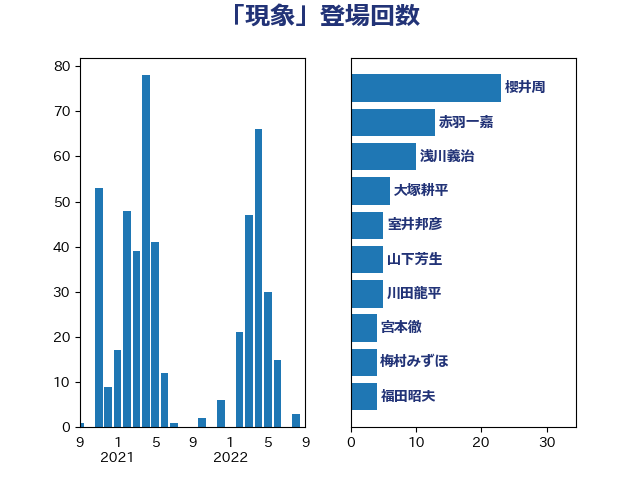

単語「現象」

| 櫻井周 | 立憲民主党 | 23 回 |
| 赤羽一嘉 | 公明党 | 13 回 |
| 浅川義治 | 日本維新の会 | 10 回 |
| 大塚耕平 | 国民民主党 | 6 回 |
| 室井邦彦 | 日本維新の会 | 5 回 |
| 山下芳生 | 日本共産党 | 5 回 |
| 川田龍平 | 立憲民主党 | 5 回 |
| 宮本徹 | 日本共産党 | 4 回 |
| 梅村みずほ | 日本維新の会 | 4 回 |
| 福田昭夫 | 立憲民主党 | 4 回 |
| 緑川貴士 | 立憲民主党 | 4 回 |
| 藤田文武 | 日本維新の会 | 4 回 |
| 青木愛 | 立憲民主党 | 4 回 |
| 高橋千鶴子 | 日本共産党 | 4 回 |
| 上野通子 | 自由民主党 | 3 回 |
| 坂本哲志 | 自由民主党 | 3 回 |
| 守島正 | 日本維新の会 | 3 回 |
| 寺田学 | 立憲民主党 | 3 回 |
| 小沼巧 | 立憲民主党 | 3 回 |
| 山崎誠 | 立憲民主党 | 3 回 |
| 岡本三成 | 公明党 | 3 回 |
| 岸田文雄 | 自由民主党 | 3 回 |
| 東国幹 | 自由民主党 | 3 回 |
| 松野博一 | 自由民主党 | 3 回 |
| 沢田良 | 日本維新の会 | 3 回 |
| 藤木眞也 | 自由民主党 | 3 回 |
| 麻生太郎 | 自由民主党 | 3 回 |
| 上川陽子 | 自由民主党 | 2 回 |
| 上田清司 | 国民民主党 | 2 回 |
| 中川正春 | 立憲民主党 | 2 回 |
| 中村裕之 | 自由民主党 | 2 回 |
| 串田誠一 | 日本維新の会 | 2 回 |
| 井上信治 | 自由民主党 | 2 回 |
| 佐々木紀 | 自由民主党 | 2 回 |
| 倉林明子 | 日本共産党 | 2 回 |
| 古川俊治 | 自由民主党 | 2 回 |
| 古賀友一郎 | 自由民主党 | 2 回 |
| 吉田統彦 | 立憲民主党 | 2 回 |
| 吉良よし子 | 日本共産党 | 2 回 |
| 嘉田由紀子 | 無所属 | 2 回 |
| 岡本あき子 | 立憲民主党 | 2 回 |
| 平山佐知子 | 無所属 | 2 回 |
| 後藤祐一 | 立憲民主党 | 2 回 |
| 日下正喜 | 公明党 | 2 回 |
| 末次精一 | 立憲民主党 | 2 回 |
| 枝野幸男 | 立憲民主党 | 2 回 |
| 津島淳 | 自由民主党 | 2 回 |
| 浅野哲 | 国民民主党 | 2 回 |
| 石井苗子 | 日本維新の会 | 2 回 |
| 石垣のりこ | 立憲民主党 | 2 回 |
| 稲津久 | 公明党 | 2 回 |
| 竹内譲 | 公明党 | 2 回 |
| 紙智子 | 日本共産党 | 2 回 |
| 舟山康江 | 国民民主党 | 2 回 |
| 茂木敏充 | 自由民主党 | 2 回 |
| 西田実仁 | 公明党 | 2 回 |
| 足立敏之 | 自由民主党 | 2 回 |
| 辻元清美 | 立憲民主党 | 2 回 |
| 金城泰邦 | 公明党 | 2 回 |
| 阿部司 | 日本維新の会 | 2 回 |
| 須藤元気 | 無所属 | 2 回 |
| 高良鉄美 | 無所属 | 2 回 |
| おおつき紅葉 | 立憲民主党 | 1 回 |
| 中川宏昌 | 公明党 | 1 回 |
| 井上哲士 | 日本共産党 | 1 回 |
| 井上英孝 | 日本維新の会 | 1 回 |
| 井野俊郎 | 自由民主党 | 1 回 |
| 仁木博文 | 無所属 | 1 回 |
| 伊藤孝恵 | 国民民主党 | 1 回 |
| 加藤勝信 | 自由民主党 | 1 回 |
| 北村経夫 | 自由民主党 | 1 回 |
| 北神圭朗 | 無所属 | 1 回 |
| 古川元久 | 国民民主党 | 1 回 |
| 吉田宣弘 | 公明党 | 1 回 |
| 和田政宗 | 自由民主党 | 1 回 |
| 塩田博昭 | 公明党 | 1 回 |
| 大岡敏孝 | 自由民主党 | 1 回 |
| 大野敬太郎 | 自由民主党 | 1 回 |
| 小林鷹之 | 自由民主党 | 1 回 |
| 小泉進次郎 | 自由民主党 | 1 回 |
| 山添拓 | 日本共産党 | 1 回 |
| 山谷えり子 | 自由民主党 | 1 回 |
| 岩谷良平 | 日本維新の会 | 1 回 |
| 市村浩一郎 | 日本維新の会 | 1 回 |
| 平沢勝栄 | 自由民主党 | 1 回 |
| 後藤茂之 | 自由民主党 | 1 回 |
| 松沢成文 | 日本維新の会 | 1 回 |
| 林芳正 | 自由民主党 | 1 回 |
| 梅村聡 | 日本維新の会 | 1 回 |
| 梶山弘志 | 自由民主党 | 1 回 |
| 森屋宏 | 自由民主党 | 1 回 |
| 森屋隆 | 立憲民主党 | 1 回 |
| 森山浩行 | 立憲民主党 | 1 回 |
| 渡辺孝一 | 自由民主党 | 1 回 |
| 熊谷裕人 | 立憲民主党 | 1 回 |
| 片山さつき | 自由民主党 | 1 回 |
| 片山大介 | 日本維新の会 | 1 回 |
| 牧山ひろえ | 立憲民主党 | 1 回 |
| 田中健 | 国民民主党 | 1 回 |
| 田中英之 | 自由民主党 | 1 回 |
| 田村憲久 | 自由民主党 | 1 回 |
| 田村貴昭 | 日本共産党 | 1 回 |
| 畦元将吾 | 自由民主党 | 1 回 |
| 石原正敬 | 自由民主党 | 1 回 |
| 石田昌宏 | 自由民主党 | 1 回 |
| 礒崎哲史 | 国民民主党 | 1 回 |
| 神谷裕 | 立憲民主党 | 1 回 |
| 福山哲郎 | 立憲民主党 | 1 回 |
| 穀田恵二 | 日本共産党 | 1 回 |
| 空本誠喜 | 日本維新の会 | 1 回 |
| 細田健一 | 自由民主党 | 1 回 |
| 羽生田俊 | 自由民主党 | 1 回 |
| 菅直人 | 立憲民主党 | 1 回 |
| 萩生田光一 | 自由民主党 | 1 回 |
| 落合貴之 | 立憲民主党 | 1 回 |
| 藤井比早之 | 自由民主党 | 1 回 |
| 西村康稔 | 自由民主党 | 1 回 |
| 豊田俊郎 | 自由民主党 | 1 回 |
| 赤木正幸 | 日本維新の会 | 1 回 |
| 足立康史 | 日本維新の会 | 1 回 |
| 遠藤敬 | 日本維新の会 | 1 回 |
| 野田佳彦 | 立憲民主党 | 1 回 |
| 野間健 | 立憲民主党 | 1 回 |
| 鈴木俊一 | 自由民主党 | 1 回 |
| 鈴木宗男 | 日本維新の会 | 1 回 |
| 鈴木憲和 | 自由民主党 | 1 回 |
| 鈴木義弘 | 国民民主党 | 1 回 |
| 鈴木貴子 | 自由民主党 | 1 回 |
| 長友慎治 | 国民民主党 | 1 回 |
| 長峯誠 | 自由民主党 | 1 回 |
| 青山繁晴 | 自由民主党 | 1 回 |
| 青柳陽一郎 | 立憲民主党 | 1 回 |
| 音喜多駿 | 日本維新の会 | 1 回 |
| 高見康裕 | 自由民主党 | 1 回 |
| 鬼木誠 | 立憲民主党 | 1 回 |
| 齋藤健 | 自由民主党 | 1 回 |